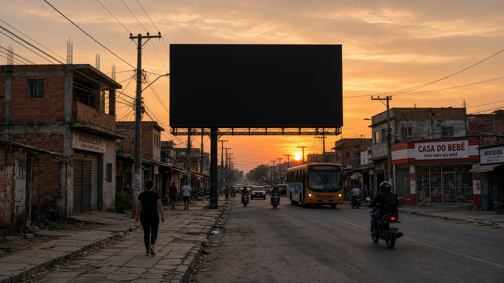

Todos os indicadores
Principais dados econômicos, sociais e ambientais em um só lugar
Carregando dados ao vivo...
Econômicos (ao vivo quando possível)
Sociais
Ambiental

Indicadores do país no telão da cidade
Principais dados econômicos, sociais e ambientais em um só lugar
Carregando dados ao vivo...